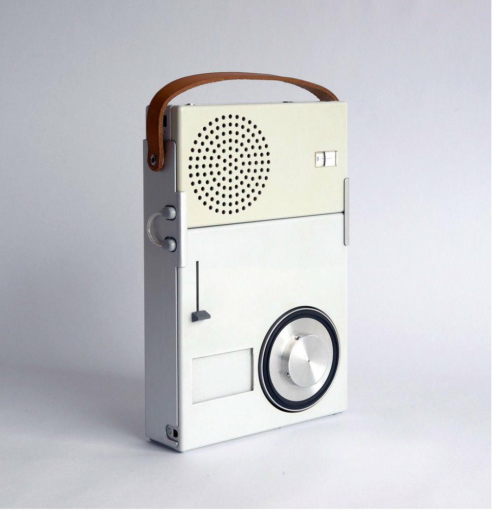
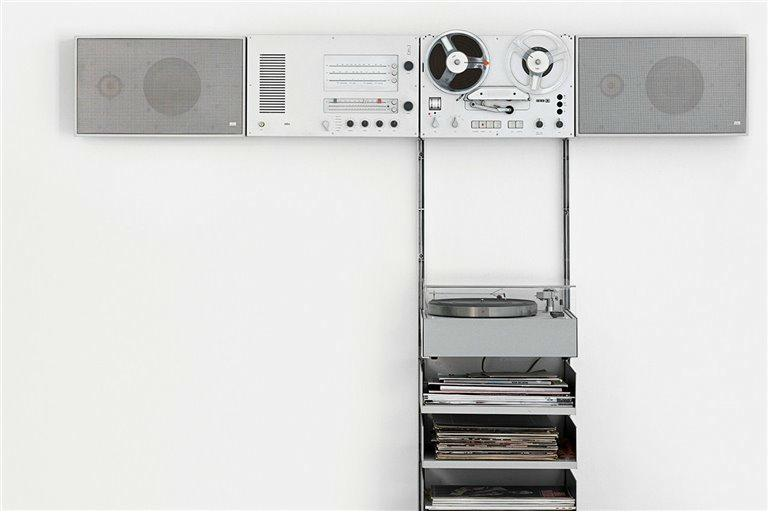
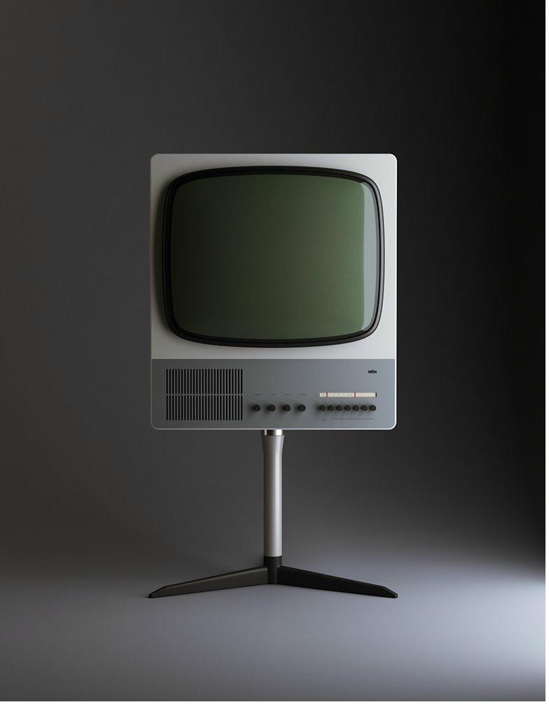
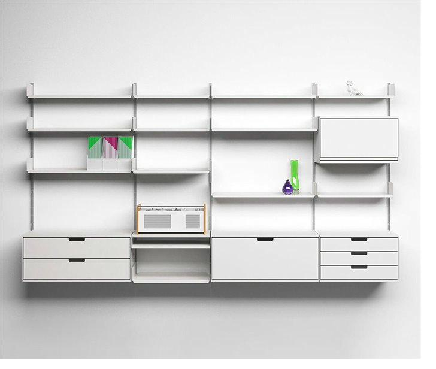

Radio tocadiscos portátil TP1
Braun · 1959
Un objeto que incluso quien no conoce el diseño tiene en casa sin saberlo. El TP1 fue un quiebre total con la estética del mueble de madera.
RAMS
A lo largo de su carrera, Dieter Rams diseñó más de 500 productos para Braun y Vitsoe. Estos son algunos de los más representativos: objetos que hoy forman parte de la historia del diseño industrial.

Braun · 1959
Un objeto que incluso quien no conoce el diseño tiene en casa sin saberlo. El TP1 fue un quiebre total con la estética del mueble de madera.

Braun · 1964
Objetos duraderos donde lo innecesario no tiene cabida. El credo sostenible de Rams hecho producto.

Braun · 1964
La curiosidad de Rams lo llevó a saltar rápidamente al diseño de televisores, aplicando el mismo lenguaje formal que en los equipos de audio.

Vitsoe · 1960
Diseño modular que se adapta a las necesidades de cada usuario. Sigue en producción hoy, exactamente igual que en 1960.
Braun · 1956
Conocido como "la tumba de Blancanieves" por su tapa acrílica transparente. Cimentó el prestigio de Rams y la identidad visual de Braun.
Braun · 1961
Un estilo más sofisticado para el mercado de mediados del siglo. Cada componente respeta el lenguaje visual del sistema.